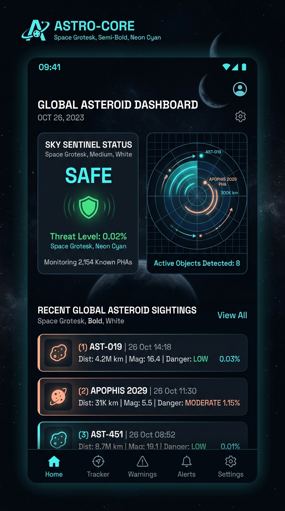
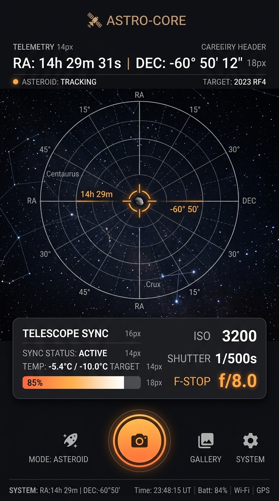
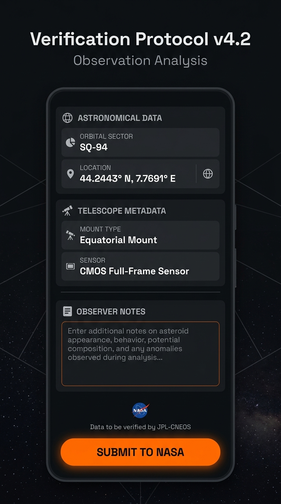
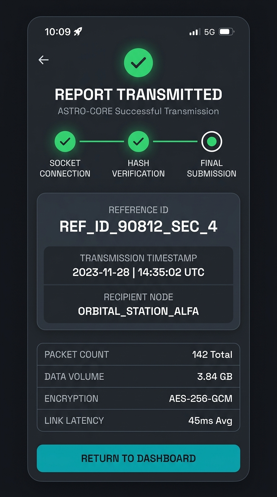

Deep Space NEO Observation UI
An Android UI prototype for telescope telemetry calibration, target viewfinder HUD, and encrypted NASA data uplink, built with Jetpack Compose.
Application Interface Gallery
High-fidelity UI screens exported from Google Stitch, showcasing dashboard widgets, radar indicators, coordinates, and secure data tunnels.

World Asteroid Day Banner
Official cover and conceptual space imagery for the prototype.
Astro Dashboard
Overview of system health, satellite connections, and local coordinates.

Observation Viewfinder HUD
Visual calibration for target acquisition overlaying telescope coordinate grids.
Telescope Sync Console
Sync options, motor temperature bars, and exposure ISO toggles.

Precise Coordinate Logging
Gathers GPS latitude, longitude, and astronomical Right Ascension metadata.
Uplink Calibration
Logs noise reduction levels, star magnitude indices, and exposure configurations.
Observation Verification Form
Encrypted data entry portal for local observers to verify asteroid signals.

Transmission Pipeline
Real-time stepper demonstrating verification, packet hashing, and secure delivery.
Uplink Packet Details
Secure pipeline transmission tracking the payload metadata verification ID.
Verification Success Screen
Displays confirmation, reference keys, payload byte sizes, and target statuses.
World Asteroid Day Awareness
June 30th is World Asteroid Day. This application was built to promote asteroid awareness and STEM education, empowering developers and observers to model asteroid detection pipelines.
"I built this World Asteroid Day app as a way of promoting asteroid awareness and STEM education. I'd be delighted if the World Asteroid Day team found any of the ideas or code useful. Feel free to adapt, extend, or incorporate any part of it into future educational projects."
The working MVP code is open-source and hosted on GitHub for global dev teams to adapt for educational or research purposes.
Live App Interactive Simulator
Click through the simulated application screens below to experience the observational pipeline walkthrough, rendered purely in HTML/CSS.
Developer Integration & Quick Start
Instructions for building the Android Jetpack Compose codebase locally on your workstation.
Build Steps
- Clone this repository:
git clone https://github.com/Agilegallie/astro-core.git - Open
/astro-corein Android Studio. - Install the Android 17 (API 37) SDK under:
Tools → SDK Manager → Android Cinnamon Bun Preview - Sync Gradle project files and compile the module.
- Deploy application code onto a physical Pixel device or emulator running API 28+.
Configuration Specs
| Setting | Value |
|---|---|
| Kotlin Version | 2.2.10 |
| Jetpack Compose | Material 3 / BOM 2025.06 |
| compileSdk | 37 |
| targetSdk | 37 |
| minSdk | 28 |
| Gradle Plugin | 9.2.1 |